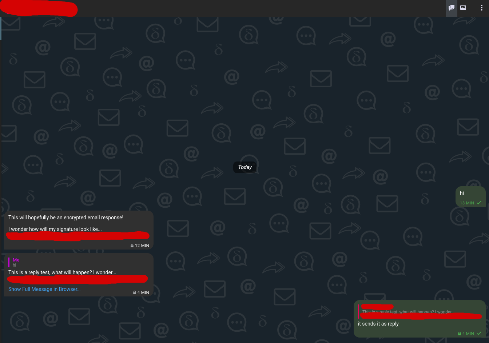

Everyone has an email address these days. Email as a protocol has been around for many years at this point. Most people end up using gmail as the email provider.
Many people end up only using email to sign up for services that require an email address. At this point email is being less and less used every day. People just have email as something that is used to send quick long formal messages to someone. Its rarely used to communicate with someone like a chat application is.
The protocol of email works very good. Anyone can get a cheap vps and self host an email service. Even though I never self hosted my own email server I know that mail in a box is a nice easy solution that people like to use to make self hosting email easy. The main reason why there is very limited use of email as a chat application is because the clients are made for longer and less messages sent type of conversations.
That is where Delta Chat changes everything. Its a chat application like sms or signal but using email instead. Its ment to provide privacy while chatting. No central server is required. Its just like an email client but with the ui of a chat application.
Upon first start of the app it will ask you to login. If your using gmail then you need to get an app password if your using 2fa. If your not then you just need to enable less secure apps. For other email services you can have a look at the provider list over on the delta chat website to see what providers work.
Then after you login you can go up to the three dots and press new chat. Support for group chats are also available.
Contacts that are on delta chat then the messages will be encrypted (the first message is not encrypted). If the contact is not on delta chat the message will only be encrypted if the persons client supports autocrypt. Otherwise the messages will be unencrypted.
Encryption from k9 mail to delta chat works great.
Messages are very quick to arrive and I get notifications almost right away for each message. Its very easy to setup if you follow the steps for your provider. Delta chat makes email protocol great to use for instant messaging. The only main issue that I have with delta chat is that if you message someone that is not on delta chat then the rest of the messages the person sends has to be a reply to the original message. Otherwise it just sends the message to the main email service and not delta.
Overall I do like delta chat and I think its easy way to get people to use a private chat application if they don’t want to create another account.
I would like to see them make an interface that includes non chat emails and has an interface like a normal email client. They all ready have the option to send non chat emails but they show up as a chat and the ui is only great for chats. It would be cool if there could be a chats section and then a normal section. Would make it so much easier to convince people to switch over. A secure chating service and a normal email client in the same application with the same account.
Delta chat is supported on android (fdroid or google play),ios,windows,linux and mac. Its trully cross platform.
Download it over at https://delta.chat today. I think you will end up liking it as much as I do (its hard to convince people to use it so I don’t have much use for it).
Screenshots: 